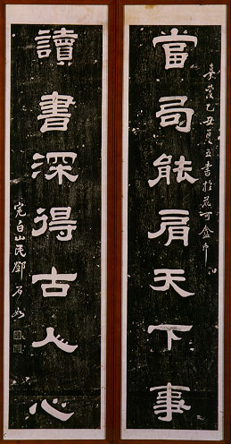

義助慰安婦 —— 李敖百件珍藏義賣藝術品（第27件） 品 名： B4. 鄧石如聯拓片 預估價： 4 萬 成交價： 4 萬 說 明： 這是清朝一流書法家鄧石如墨蹟的拓本。鄧石如是公認清朝字寫得最好的書法家，其功力所以如此深厚，當與他勤臨秦漢碑文有關（每碑皆臨摹百遍以上）。中國藝術史上，書法佔極重要地位，可惜很多真蹟均已失傳；現最早的書法真蹟是晉朝陸機的《平復帖》。所幸許多真蹟透過拓本得以保存下來，因此拓本亦具收藏價值。 
這是清朝一流書法家鄧石如墨蹟的拓本。鄧石如是公認清朝字寫得最好的書法家，其功力所以如此深厚，當與他勤臨秦漢碑文有關（每碑皆臨摹百遍以上）。中國藝術史上，書法佔極重要地位，可惜很多真蹟均已失傳；現最早的書法真蹟是晉朝陸機的《平復帖》。所幸許多真蹟透過拓本得以保存下來，因此拓本亦具收藏價值。